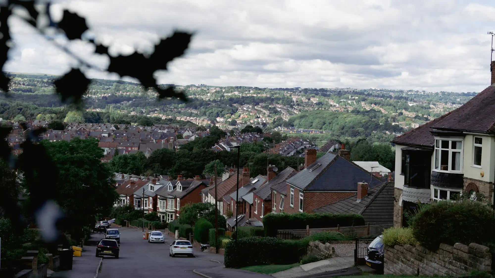
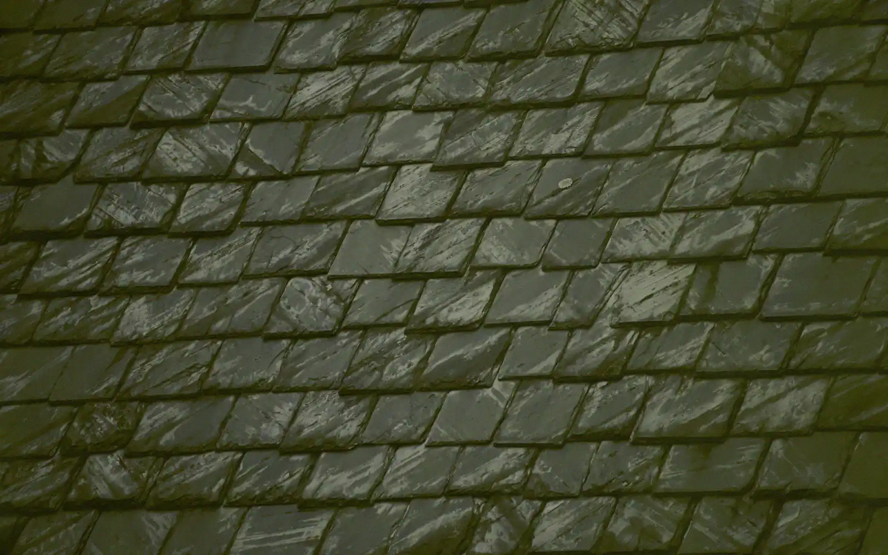
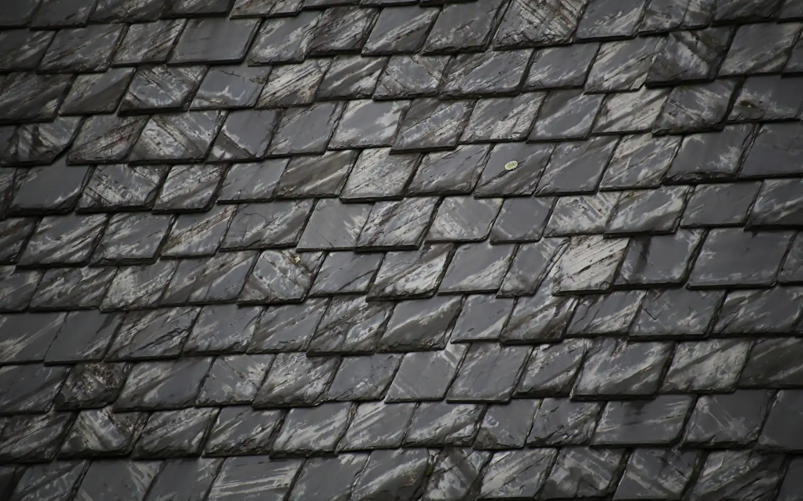
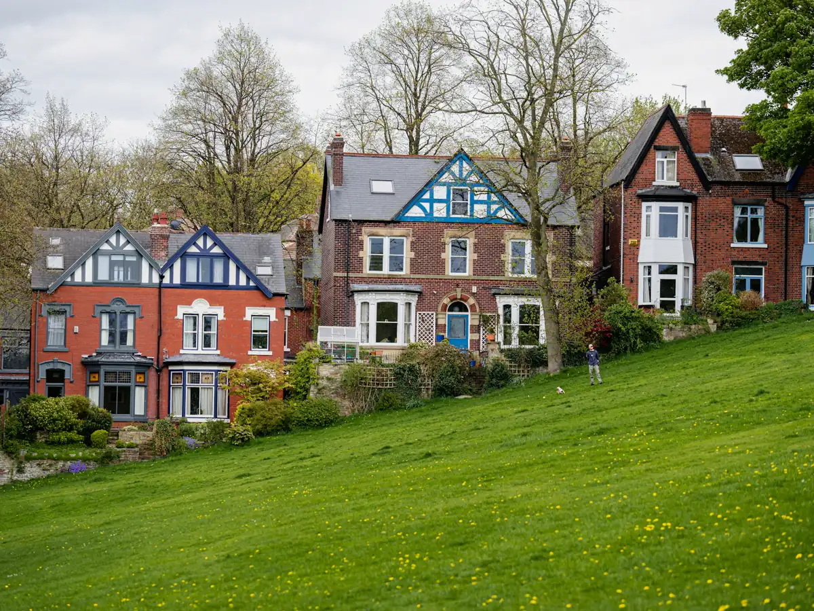

Roofers · Rossendale and the valleys
Roofs built for
this weather.
Re-roofs, flat roofs, chimneys and guttering. Send us a photo from the ground and we'll tell you honestly whether it needs a repair or a new roof.
What we do
Four jobs. Done right.
 Stock photo
Stock photoRe-roofs
Slate and tile roofs stripped and renewed, done in sections so your home is never left open.
 Illustration
IllustrationFlat roofs
Extensions, garages and dormers. Felt, rubber or fibreglass, laid properly and detailed at the edges.
 Stock photo
Stock photoChimneys
Repointing, repairs and new flashing. Scaffold up, job done, scaffold down.
 Stock photo
Stock photoFascias, soffits and guttering
Leaking gutters, sagging fascias and rotten soffits, renewed so water goes where it should.
How a photo quote works
Three photos. One honest answer.
Snap it from the ground
A wide shot of the roof, then closer ones of the problem. From the garden or a window, never a ladder.
Send it to us
Upload the photos with a line about what's wrong. It takes two minutes.
Get a straight answer
Repair or replace, a clear quote, and when we can do it Sample. If we need to see it, we'll say.


Illustration, not a real job. The "before" is the same stock photo, weathered in code to show the kind of difference a re-roof makes.
Before and after
The photo is the sale.
Drag the slider. On the left, slates gone dull and green with moss. On the right, clean slate in tidy rows.
It's an illustration, not a real job, but it's exactly the kind of difference you'll see on your own house.
See the galleryGallery
Sample jobs.
8 jobs shown
Stock photoFull slate re-roofRawtenstall · sample Stock photoTile re-roofHaslingden · sample
Stock photoTile re-roofHaslingden · sample Stock photoSlate repairsBacup · sampleIllustrationRubber flat roofAccrington · sample
Stock photoSlate repairsBacup · sampleIllustrationRubber flat roofAccrington · sample IllustrationGarage flat roofRamsbottom · sampleStock photoChimney repointRamsbottom · sampleStock photoGutters and fasciasRawtenstall · sample
IllustrationGarage flat roofRamsbottom · sampleStock photoChimney repointRamsbottom · sampleStock photoGutters and fasciasRawtenstall · sample Stock photoDownpipe renewalAccrington · sample
Stock photoDownpipe renewalAccrington · sampleEvery job here is a made-up sample with a stock photo or illustration. Tap one to see it bigger.
Where we work
Up and down the valleys.
Based in Rawtenstall Sample. These are the towns we cover most. Coverage is a sample for this demo.

Stock photoAdvice
Worth knowing.
Stock photoRepair or a new roof? How to tell
Most roofs don't need replacing. Here's how we decide, and what to look for from the ground.
IllustrationFlat roof options, in plain English
Felt, rubber or fibreglass: what each is like, and which suits which job.
 Stock photo
Stock photoWhat to check after a storm
A safe, ground-level checklist for the morning after a big blow.
Worried about your roof?
Send a photo from the ground for an honest view, or use the emergency button if it's leaking now.